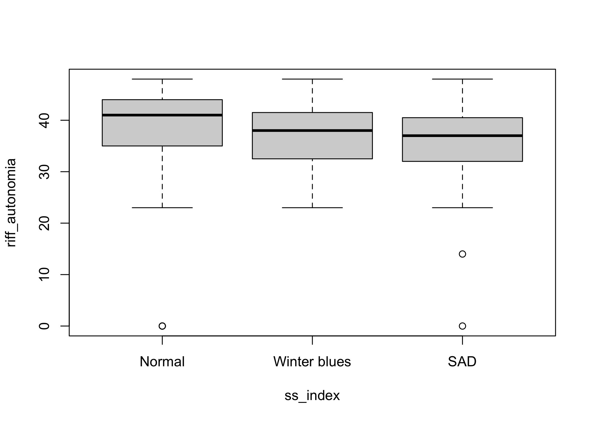

Este paquete de R contiene herramientas complementarias para la exploración y la reproducibilidad de los análisis llevados a cabo para el estudio de sensibilidad estacional. Este estudio es llevado a cabo por Cristian Núñez Espinosa, Matías Castillo Aguilar y Claudia Estrada Goic.
Sobre
R es un lenguaje de programación estadística de alto nivel usado para el análisis de datos, así como para el desarrollo de herramientas informáticas como sitios web, reportes, aplicaciones, libros digitales, etc. Para más información puedes visitar el sitio de R-project.
Instalación
Puedes instalar la versión de desarrollo de seasonalSensitivity desde GitHub escribiendo lo siguiente en tu consola de R:
# install.packages("devtools")
devtools::install_github("nim-ach/seasonalSensitivity")Ejemplo de uso
Para usar los datos basta con cargar la librería una vez instalada. Puedes hacerlo de la siguiente forma
library(seasonalSensitivity) # Cargamos el paquete
exists("dataset") # Tenemos listos nuestros datos para ser usados
#> [1] TRUEComo demostración grafiquemos la autonomía como dominio de bienestar de Ryff según la clasificación basado en el puntaje de sensibilidad estacional (i.e., Seasonal Score Index):

Y como dato adicional podriamos calcular la mediana y el rango intercuartil de riff_autonomia para para categoría de ss_index de la siguiente forma:
# Creamos una función para estimar los estadísticos
median_iqr <- function(x) {
x <- x[!is.na(x)] # Paso 1: eliminamos los valores perdidos
mu <- median(x) # Paso 2: calculamos la mediana
sigma <- IQR(x) # Paso 3: calculamos el rango intercuartílico
paste0(round(mu, 1), " (", round(sigma, 1), ")")
}
# La implementamos usando syntaxis data.table: DT[i, j, by]
dataset[, .("median (IQR)" = median_iqr(riff_autonomia)), ss_index]
#> ss_index median (IQR)
#> 1: Normal 41 (9)
#> 2: SAD 37 (8.2)
#> 3: Winter blues 38 (9)
#> 4: <NA> 41 (0)